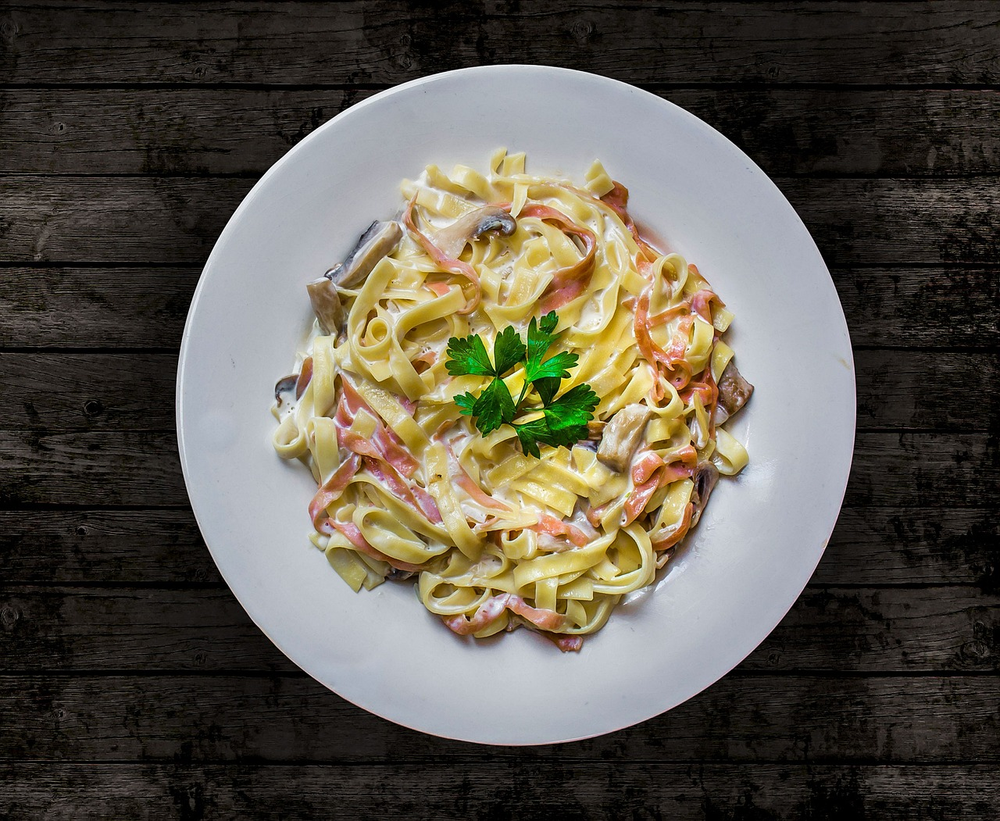

<!DOCTYPE html>
<html lang="en">
<head>
    <meta charset="UTF-8">
    <title>Carbonara</title>
</head>

<body>

    </html><h1>Carbonara</h1>
    
    <p><h2>A wonderful authentic italian dish to enjoy anytime!</h2></p>
    <p>This is a simple but elegant dish to make for yourself or share with that special person.</p>
    <p><h3>To prepare this savoury dish, you will need:</h3></p>
    <ul>
        <li><em>√100</em> slices bacon , cut into <em>11/22</em>-inch pieces</li>
        <li><em>2+(2*3) 11/22</em> cups water , divided</li>
        <li><em>perimeter of a square with sides=1</em> cloves garlic , minced</li>
        <li><em>.454 e-3</em> g fettuccine</li>
        <li>The slope of this line <em>y=1.25x+69</em> cups finely grated parmesan cheese, plus more for serving</li>
        <li>π (rounded to the nearest whole number) large eggs</li>
        <li><em>|i^2|</em>large egg yolk</li>
        <li><em>csc π/2rad</em> tsp each salt and pepper , or to taste</li>
    </ul>

    <p><h3>Now let's put it all together:</h3></p>
    <ol>
        <li>Add bacon and 1/2 cup of the water to a large non-stick skillet and bring to a simmer over medium-high heat.</li>
        <li>Allow to simmer until water evaporates about 6 - 7 minutes, then reduce heat to medium-low and continue to cook until bacon is brown and crisp, about 6 - 8 minutes longer.</li>
        <li>Place a fine mesh strainer over a bowl then pour bacon into strainer while reserving about 1 tsp of the rendered fat in pan. Return pan to heat and saute garlic about 30 seconds, until fragrant and lightly golden.</li>
        <li>Pour into a medium mixing bowl then add 1 Tbsp rendered bacon fat (drippings in bowl set under strainer) to mixing bowl with garlic. Add eggs, egg yolk, parmesan and pepper to garlic mixture and whisk until well combined.</li>
        <li>Meanwhile, bring 8 cups of water to a boil in a large dutch oven (no more than 8 cups because you want a very starchy water for the sauce). Add spaghetti and salt to boiling water and cook until al dente. While pasta is boiling, set a colander in a large bowl.</li>    
        <li>Carefully drain al dente pasta into colander in bowl, while reserving pasta water in bowl. Measure out 1 cup hot pasta water and discard remaining water. Immediately place pasta in now empty large bowl.</li>    
        <li>Slowly pour and whisk 1/2 cup pasta water into egg mixture, then slowly pour mixture over pasta while tossing to coat. Add bacon and toss to combine. Season with salt if desired.</li>    
        <li>Let pasta rest, tossing frequently, 2 - 4 minutes until sauce has thickened slightly and coats pasta. Thin with remaining 1/2 cup hot pasta water as needed. Serve immediately topped with additional parmesan and parsley.</li>
    </ol>

<div style="text-align: right; font-size: 8.5px; line-height: 4;" >I'm a fraud! I don't know how to cook. this recipe was plagiarized, so I had to change some details. Please don't sue me :(</div>
    <p><a href="../index.html">Back to Homepage</a></p>

</body>

